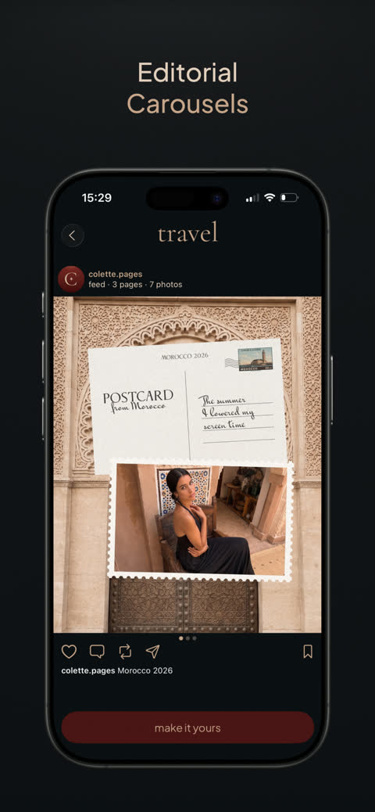
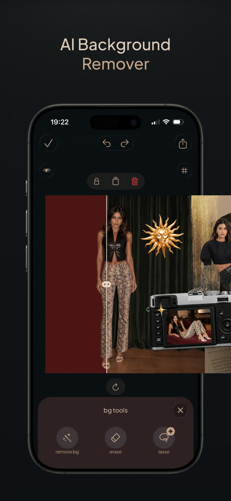
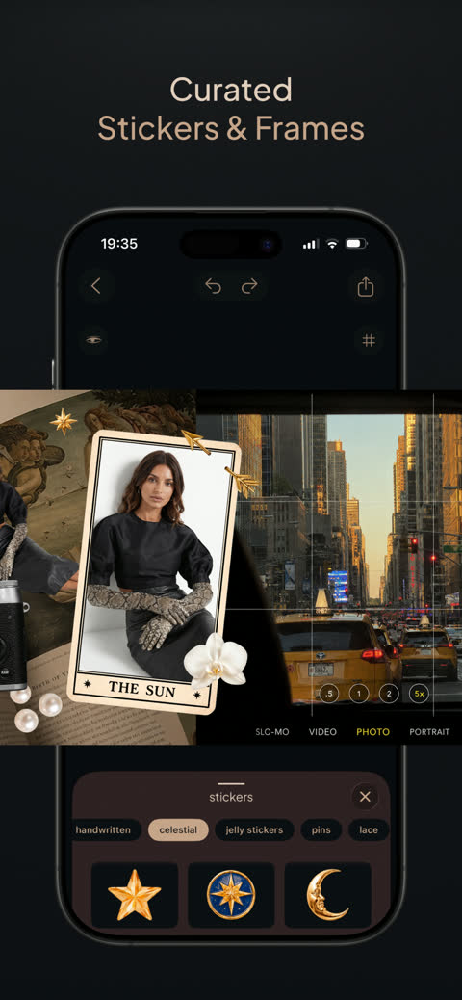
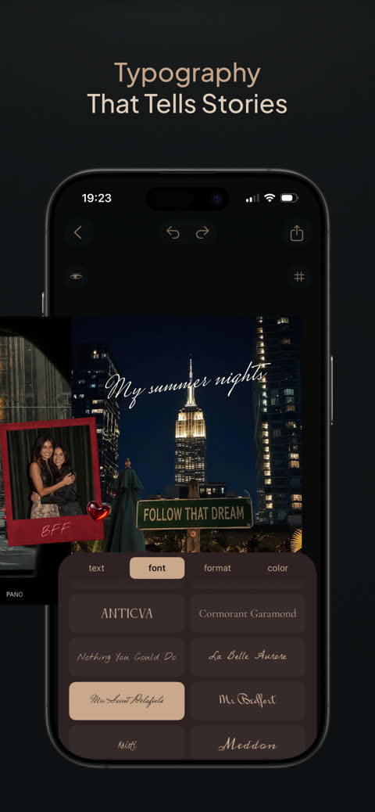
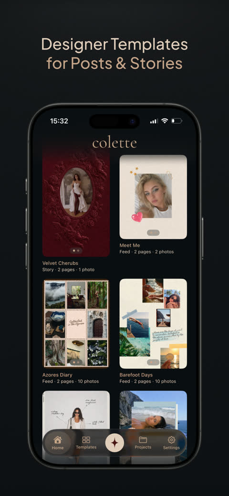
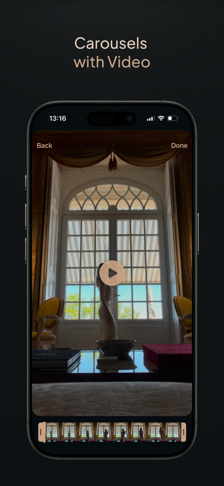

Colette — Press Kit
A carousel-native editor for iPhone: one canvas across every slide.
Most apps in this category treat a swipe post as a stack of separate square images. Colette treats the whole carousel as one canvas. Every layer — photo, video, text, sticker, hand drawing — lives in coordinates that span all the slides, so a picture dragged across the boundary between slide 2 and slide 3 stays one picture while you keep editing it. On export, Colette slices the canvas into individual slides that line up exactly when a reader swipes.
- Developer
- Igor Krivorotov (solo developer)
- Released
- August 9, 2026
- Current version
- 1.1 — August 15, 2026
- Platform
- iPhone, iOS 17.0 or later
- Category
- Photo & Video (also Graphics & Design)
- Price
- Free to download; optional Pro upgrade
- Download size
- About 243 MB
- Languages
- Interface in 9 languages; App Store page in 17 storefront locales
- Data collected
- None — no account, no analytics, no ad SDK
The seam
The seam is the signature idea. A seamless swipe post normally means slicing an image by hand in a desktop editor and hoping the crops match after upload. In Colette it is a drag: you place one photo across the boundary, and the app keeps the halves in sync live while you scale, crop or move it.
The rule holds for video too: a clip that spans a boundary is rendered once per slide it intersects, and a carousel carrying video layers can be exported as a video slideshow instead of still slides.
What is in the app
- 25 designer templates for feed posts and stories.
- 241 stickers across 13 categories and 80 frames across 8.
- 22 type families, from editorial serifs to handwriting.
- Up to 20 slides per project; the first nine are free.
- On-device background removal built on Vision — no upload, works offline.
- Export as a set of still slides, or as a video slideshow when the carousel carries video.
Screenshots






Privacy
Everything runs on the device. There is no account and no backend: the privacy manifest declares zero collected data types and zero tracking domains, projects live in the app's own storage on the iPhone that created them, and a finished carousel leaves the phone only through the user's own export to Photos. Colette works in Airplane Mode; a connection is used only to verify a subscription purchase.
Links
Press contact
Igor Krivorotov — developer
Screenshots and the app icon on this page may be reproduced in coverage of the app. Higher resolution assets and a build for review are available on request.
Page updated August 15, 2026.